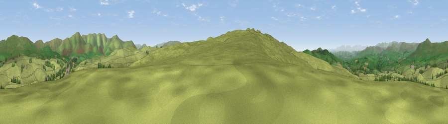

Viewpoint near Grayrigg
#16836 in England · top 55% of its area beats it · near GrayriggWhere it is
The exact computed spot (SD 58975 95125). Click the marker for map links.
The view, rendered

A 360° render of this exact spot computed from the terrain model, tree cover and land cover — summer colours, afternoon light, calibrated against photographs of famous viewpoints. Real trees, hedges and buildings will differ in detail.
The panorama
Grey silhouette: terrain skyline in each direction (720 bearings, Earth curvature and refraction included). Dashed green: skyline with trees (+15 m) and buildings (+8 m) as obstacles. Blue strip: how far the ground is visible on each bearing.
Where the view opens
Wedge length = distance to the farthest visible ground on that bearing (vegetation-aware). Rings at 10, 25 and 50 km.
What fills the view
92% grassland · 7% woodland · 1% built-up
Angular shares of the visible panorama (visual magnitude), not map area. Landscape diversity 0.14 (0–1 Shannon).
Key numbers
More beautiful places nearby
The staircase of upgrades: each row has a higher view potential than everything closer. Driving times are estimates from straight-line distance, calibrated against real road routing — check an actual route before setting out.
| Place | Direction | Drive | Score |
|---|---|---|---|
| Lambrigg Fell NW Top | SSW · 1 km | ~3 min | 71.6 |
| Green Bank | SSW · 3 km | ~8 min | 74.1 |
| Viewpoint near Meal Bank | WSW · 4 km | ~10 min | 75.7 |
| Whinfell Beacon | NNW · 5 km | ~12 min | 77.0 |
| Viewpoint c9961_7292 | ENE · 6 km | ~13 min | 78.2 |
| Fell Head | ENE · 7 km | ~14 min | 78.8 |
| Calders | E · 8 km | ~16 min | 79.0 |
| Calf Top | SE · 12 km | ~23 min | 79.8 |
54.35000, -2.63266 · source: screening · position refined by local search. Computed location — check access rights before visiting.